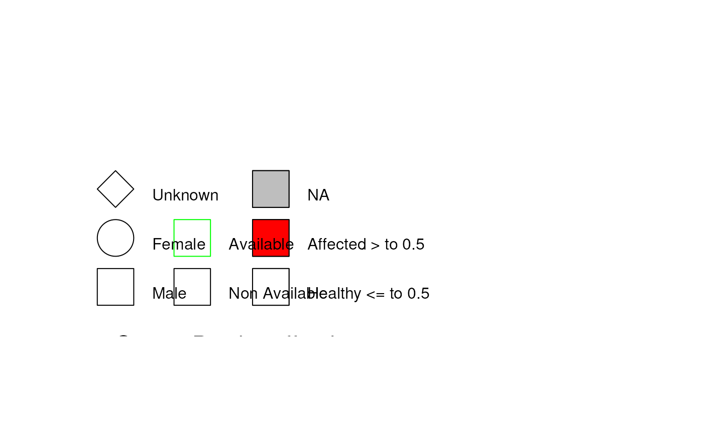

Convert a Pedigree to a legend data frame for it to
be plotted afterwards with plot_fromdf().
Usage
# S4 method for class 'Pedigree'
ped_to_legdf(
obj,
boxh = 1,
boxw = 1,
cex = 1,
adjx = 0,
adjy = 0,
lwd = par("lwd")
)Arguments
- obj
A Pedigree object
- boxh
Height of the polygons elements
- boxw
Width of the polygons elements
- cex
Character expansion of the text
- adjx
default=0. Controls the horizontal text adjustment of the labels in the legend.
- adjy
default=0. Controls the vertical text adjustment of the labels in the legend.
- lwd
default=par("lwd"). Controls the bordering line width of the elements in the legend.
Details
The data frame contains the following columns:
x0,y0,x1,y1: coordinates of the elementstype: type of the elementsfill: fill color of the elementsborder: border color of the elementsangle: angle of the shading of the elementsdensity: density of the shading of the elementscex: size of the elementslabel: label of the elementstips: tips of the elements (used for the tooltips)adjx: horizontal text adjustment of the labelsadjy: vertical text adjustment of the labels
All those columns are used by
plot_fromdf() to plot the graph.
Examples
data("sampleped")
ped <- Pedigree(sampleped)
leg_df <- ped_to_legdf(ped)
summary(leg_df$df)
#> id x0 y0 x1
#> Length:22 Min. :0.000 Min. :0.0000 Min. : NA
#> Class :character 1st Qu.:1.280 1st Qu.:0.8333 1st Qu.: NA
#> Mode :character Median :3.691 Median :1.7500 Median : NA
#> Mean :2.931 Mean :1.8333 Mean :NaN
#> 3rd Qu.:4.263 3rd Qu.:2.6667 3rd Qu.: NA
#> Max. :5.263 Max. :5.3333 Max. : NA
#> NA's :22
#> y1 type fill border
#> Min. : NA Length:22 Length:22 Length:22
#> 1st Qu.: NA Class :character Class :character Class :character
#> Median : NA Mode :character Mode :character Mode :character
#> Mean :NaN
#> 3rd Qu.: NA
#> Max. : NA
#> NA's :22
#> angle density cex label
#> Min. : NA Min. : NA Min. :1.000 Length:22
#> 1st Qu.: NA 1st Qu.: NA 1st Qu.:1.000 Class :character
#> Median : NA Median : NA Median :1.000 Mode :character
#> Mean :NaN Mean :NaN Mean :1.075
#> 3rd Qu.: NA 3rd Qu.: NA 3rd Qu.:1.000
#> Max. : NA Max. : NA Max. :1.500
#> NA's :22 NA's :22 NA's :2
#> tips adjx adjy
#> Length:22 Min. :0 Min. :1
#> Class :character 1st Qu.:0 1st Qu.:1
#> Mode :character Median :0 Median :1
#> Mean :0 Mean :1
#> 3rd Qu.:0 3rd Qu.:1
#> Max. :0 Max. :1
#> NA's :10 NA's :10
plot_fromdf(leg_df$df, usr = c(-1,15,0,7))
